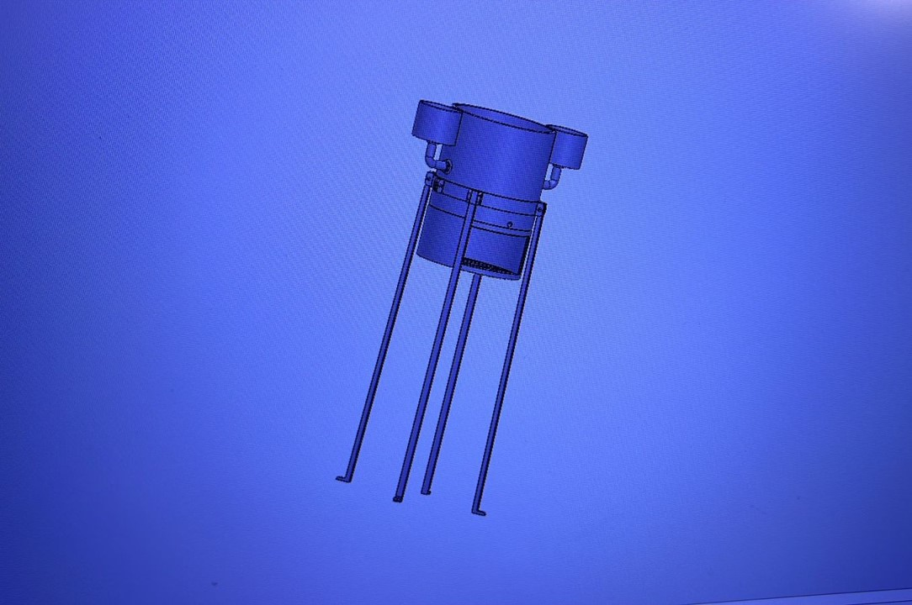

DESARROLLO DE PROTOTIPO FISICO
Eco-Tank

Se sabe que se está pasando por una crisis importante con el recurso natural del agua; con este prototipo será posible medir y exactamente y uno mismo limitar el uso efectivo a la hora del baño, el cual es un lugar del hogar en donde más se puede desperdiciar este valioso liquido.



Contacto
Andrés Ceballos Carrasco - A00823208@tec.mx